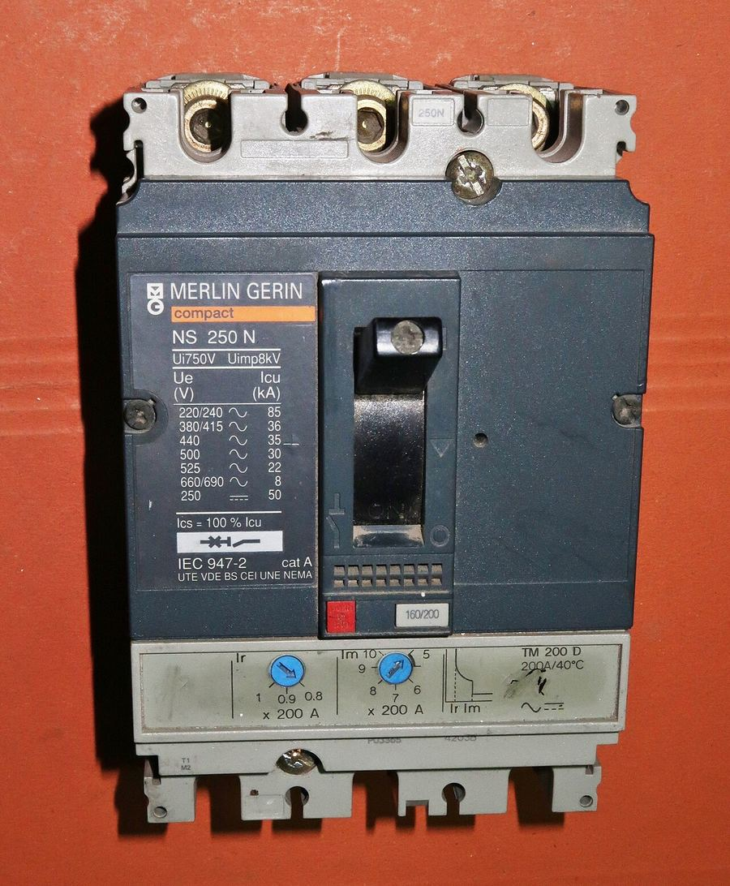
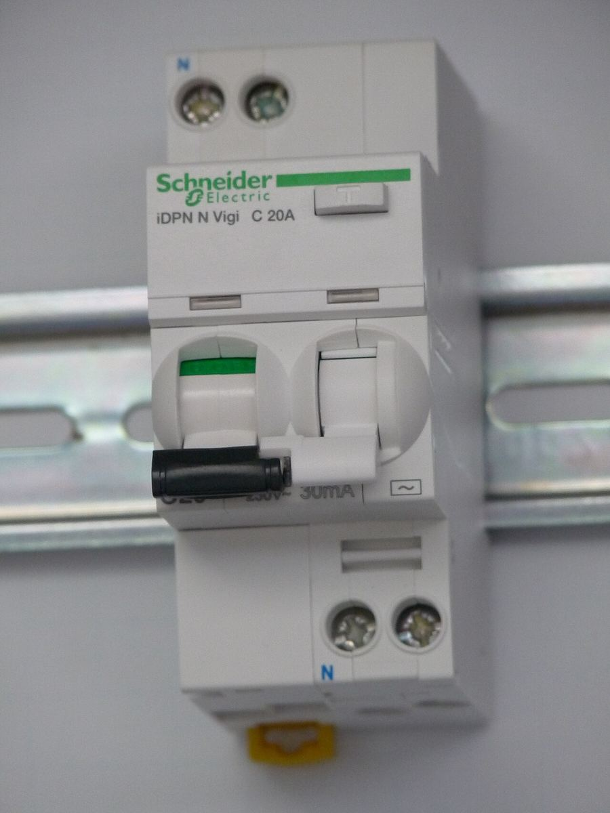
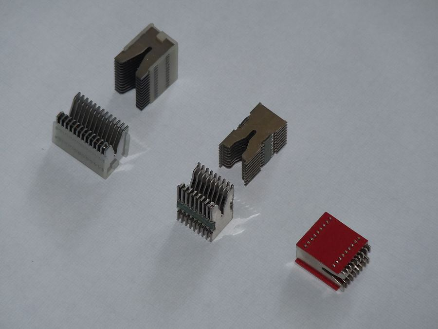
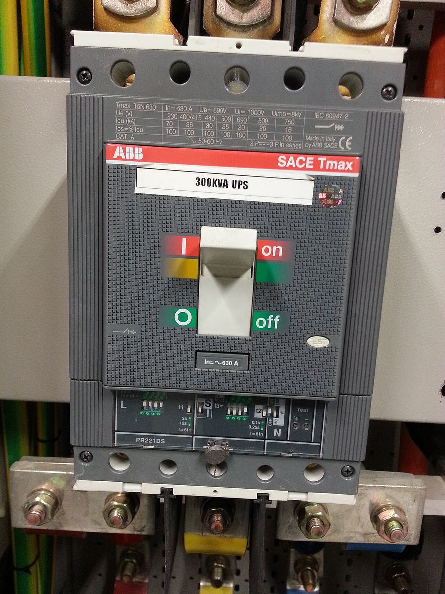
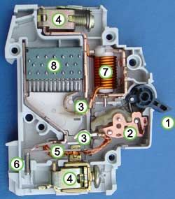

Capacitatea de rupere a aparatelor de protecție
Ce este capacitatea de rupere, cum o citești pe aparat, de unde iei curentul de scurtcircuit prezumat, cum alegi între 4,5 / 6 / 10 kA și MCCB, ce cere Normativul I7-2011 și cum verifici cablul. Cu exemple de calcul, aparate de pe piața din România și fișele lor tehnice.
Lecția anterioară: MCB, MCCB, DDR și RCBO.
1. Ce este capacitatea de rupere și de ce contează
Capacitatea de rupere (numită în manualul Schneider și „capacitate de deconectare la scurtcircuit”) este cea mai mare valoare prezumată a curentului pe care un aparat este capabil să-l întrerupă fără a suferi deteriorări semnificative. Se exprimă în kA, valoare eficace a componentei alternative a curentului de defect.
Un aparat cu capacitate de rupere prea mică nu „nu declanșează” — declanșează, dar nu reușește să stingă arcul electric: contactele se sudează, carcasa se sparge, arcul iese din aparat. De aceea regula de mai jos este o condiție de securitate, nu de confort.
Normativ I7-2011 · art. 4.3.5.1„Capacitatea de rupere trebuie să fie cel puțin egală cu cea a curentului de scurtcircuit prezumat, la locul de instalare, cu excepția următoare: – este admisă o capacitate de rupere mai mică, dacă alt dispozitiv de protecție având o capacitate de rupere necesară, este instalat în amonte. În acest caz, trebuie coordonate caracteristicile acestora, astfel ca energia care trece prin dispozitivul din amonte să fie inferioară capacității celui din aval. […] Detaliile caracteristicilor celor două dispozitive ce trebuie coordonate vor fi date de producătorii acestora.”
Regula de bază + excepția (filiația, §7). Ultima frază: coordonarea se face din datele producătorului, nu din calcul propriu.
Normativ I7-2011 · art. 4.3.5„Fiecare dispozitiv de protecție la scurtcircuit trebuie să respecte simultan condițiile de la 4.3.5.1 și 4.3.5.2.”
Două condiții, ambele obligatorii: capacitate de rupere (aparatul) și timp de întrerupere (cablul, §8).
2. Mărimile care apar pe aparate și în cataloage
| Simbol | Denumire | Standard | Ce înseamnă |
|---|---|---|---|
| Icn | capacitate de rupere nominală | SR EN 60898-1 (MCB uz casnic) | valoarea de încercare; trepte normalizate 1,5 – 3 – 4,5 – 6 – 10 – 15 – 20 – 25 kA |
| Ics (la MCB) | capacitate de rupere de serviciu | SR EN 60898-1 | Ics = k · Icn: Icn ≤ 6 kA → Ics = Icn; 6 < Icn ≤ 10 kA → Ics = 0,75 Icn; Icn > 10 kA → Ics = 0,5 Icn |
| Icu | capacitate de rupere limită („ultimă”) | SR EN 60947-2 (MCCB, ACB) | curentul maxim pe care aparatul îl întrerupe o dată (secvența O – CO); după aceea poate fi deteriorat |
| Ics (la MCCB) | capacitate de rupere de serviciu | SR EN 60947-2 | 25 / 50 / 75 / 100 % din Icu; aparatul rămâne bun după O – CO – CO. „În Europa, practica industrială utilizează un coeficient k de 100 %, astfel încât Ics = Icu” (Schneider, H16) |
| Icm | capacitate de închidere pe scurtcircuit | SR EN 60947-2 | valoarea de vârf pe care aparatul o poate închide; Icm = k · Icu (tabelul de mai jos) |
| Icw | curent admisibil de scurtă durată | SR EN 60947-2, categoria B | curentul suportat termic și electrodinamic un timp dat (ex. 1 s) fără să declanșeze — pentru selectivitate temporizată |
| Inc / IΔc | curent de scurtcircuit condiționat | SR EN 61008-1 (RCCB) | RCCB-ul nu se autoprotejează; Inc este valabil numai cu siguranța / MCB-ul din amonte indicat de producător (foto 3: Inc = IΔc = 3 kA) |
Relația Icu – cos φ – Icm (SR EN 60947-2; Schneider Tab. H34 și H37)
| Icu | cos φ de încercare | Icm = k · Icu |
|---|---|---|
| 6 kA < Icu ≤ 10 kA | 0,5 | 1,7 × Icu |
| 10 kA < Icu ≤ 20 kA | 0,3 | 2,0 × Icu |
| 20 kA < Icu ≤ 50 kA | 0,25 | 2,1 × Icu |
| Icu > 50 kA | 0,2 | 2,2 × Icu |
De ce contează cos φ: cu cât rețeaua e mai „tare” (aproape de transformator), cu atât cos φ al buclei de defect e mai mic și întreruperea e mai grea; standardul încearcă aparatele exact în aceste condiții. Exemplu din manual: Masterpact NW08H2, Icu = 100 kA → Icm = 100 × 2,2 = 220 kA vârf.
Categorii de utilizare (SR EN 60947-2): categoria A — fără temporizare intenționată la scurtcircuit (MCCB-urile obișnuite); categoria B — poate temporiza declanșarea la scurtcircuit, pentru selectivitate, cât timp curentul e sub Icw (întreruptoare deschise ACB și unele MCCB mari).
3. Cum citești marcajele de pe aparat







4. De unde iei curentul de scurtcircuit prezumat
Normativ I7-2011 · art. 3.1.4.1„Valoarea curentului de scurtcircuit prezumat la originea instalațiilor luat în considerare la alegerea echipamentului din instalațiile de distribuție și utilizare trebuie determinat în conformitate cu normativul NTE 006/06/00.”
La branșament: din avizul tehnic de racordare al distribuitorului sau din calcul conform NTE 006; nu din presupuneri.
Calcul simplificat la bornele JT ale transformatorului (Schneider, cap. G §4.1)
Neglijând impedanța rețelei de medie tensiune:
In = P · 10³ / (√3 · U20) Isc = In · 100 / Usc
- P = puterea transformatorului [kVA]; U20 = tensiunea secundară în gol [V]; Usc = tensiunea de scurtcircuit [%]
- Usc tipic (Tab. G31): 4 % la transformatoare în ulei de 50 … 750 kVA; 6 % la 800 … 3200 kVA și la toate cele uscate
Exemplul din manual — transformator 400 kVA, 242/420 V, Usc = 4 %: In = 400 000 / (√3 · 420) = 550 A; Isc = 550 · 100 / 4 = 13,7 kA.
Al doilea exemplu din manual — transformator 250 kVA, 400 V: In = 360 A, Isc = 8,9 kA; manualul alege un întreruptor de 400 A cu declanșator reglabil 250 – 400 A și Icu = 45 kA. Observă rezerva mare: calculul simplificat dă o valoare „ușor mai mare decât cea reală”, deci acoperitoare, iar rezerva protejează la schimbări ulterioare ale rețelei.
Mai multe transformatoare în paralel: Isc pe bara comună ≈ suma Isc ale fiecărui transformator; întreruptorul de pe cel mai mic transformator trebuie să aibă capacitatea de rupere pentru curentul de defect cel mai mare care poate veni de la celelalte.
Scăderea Isc pe lungimea cablului
Două metode, ambele din manualul Schneider: Tab. G39 („metoda compoziției”: Isc amonte + secțiune + lungime → Isc aval; exemplul din manual: 28 kA în amonte, cablu Cu 47,5 mm², 20 m → ≈ 14,7 kA) sau metoda impedanțelor (cap. G §4.2), folosită în exemplele de mai jos:
- impedanța sursei văzută în punctul cunoscut: Z = U / (√3 · Isc) trifazat, respectiv Z = U0 / Isc monofazat;
- rezistența cablului: R = ρ · L / S pe conductor, cu ρ = 22,5 mΩ·mm²/m pentru cupru, 36 pentru aluminiu (valorile din manual); la circuite monofazate bucla are dus și întors → 2 · R;
- reactanța cablurilor mici: 0,08 mΩ/m — de regulă neglijabilă sub 50 mm².
5. Exemplu 1 — atelier alimentat din post propriu de 250 kVA
TG la 5 m de post (250 kVA, 400 V, Usc = 4 %); cablu Cu 16 mm², 50 m până la tabloul secundar TS; din TS, circuite de 16 – 32 A.
- Isc la bornele transformatorului: In = 250 000 / (√3 · 420) = 344 A; Isc = 344 · 100 / 4 = 8,6 kA.
- Întreruptorul general din TG: Icu ≥ 8,6 kA la 415 V. Alegem MCCB 400 A, Ir 250 – 400 A, Icu = Ics = 36 kA (Compact NSX400F, Tmax XT3N, Schrack MC2 — vezi §10). Rezerva ≈ 4 ori, ca în exemplul din manual.
- Isc la TS: Z sursă = 420 / (√3 · 8600) = 28 mΩ; R cablu = 22,5 · 50 / 16 = 70 mΩ; Z ≈ 98 mΩ → Isc = 420 / (√3 · 0,098) ≈ 2,5 kA.
- MCB-urile din TS: Icn ≥ 2,5 kA → 6 kA (marcaj „6000 / 3”). Nu e nevoie de 10 kA. Un RCCB 40 A / 30 mA se pune cu MCB-ul cerut de producător pentru Inc ≥ 2,5 kA.
- Verificarea cablului — vezi §8: la 8,6 kA cablul de 16 mm² rezistă 46 ms; MCCB-ul rupe în 10 – 20 ms ✓.
Ce se schimbă dacă… TS e la 5 m, nu la 50 m: R = 7 mΩ, Isc ≈ 420 / (√3 · 0,035) ≈ 6,9 kA → MCB de 6 kA nu mai ajunge; treci la 10 kA sau folosești tabelul de filiație cu MCCB-ul din TG. Al doilea transformator de 250 kVA în paralel: Isc la TG ≈ 17 kA; MCCB-ul de 36 kA rămâne bun; la TS Isc ≈ 3,6 kA, tot sub 6 kA.
6. Exemplu 2 — casă cu branșament monofazat
BMPM la limita proprietății; coloană Cu 6 mm², 15 m până la tabloul de apartament (TA); din TA un circuit de prize Cu 2,5 mm², 20 m. În avizul de racordare: Isc la punctul de delimitare = 3,5 kA (valoare presupusă pentru exemplu — în realitate o citești din aviz).
- MCB-ul din BMPM (montat de distribuitor, 32 sau 40 A): Icn ≥ 3,5 kA → 6 kA; 4,5 kA ar fi la limită, fără rezervă.
- Isc la TA (monofazat, bucla L + N): Z sursă = 230 / 3500 = 66 mΩ; R buclă coloană = 2 · 22,5 · 15 / 6 = 112 mΩ; Z = 178 mΩ → Isc = 230 / 0,178 ≈ 1,3 kA.
- Aparatele din TA: MCB / RCBO 6 kA acoperă cu rezervă mare; 4,5 kA ar fi și el admis (1,3 < 4,5). RCCB 40 A / 30 mA tip A: contează Inc de pe etichetă, cu MCB-ul general în amonte.
- Coloana de 6 mm² la scurtcircuit (cel mai sever: defect chiar la BMPM, I = 3,5 kA): t = (115 · 6 / 3500)² = 0,039 s = 39 ms; MCB-ul C32 declanșează magnetic în ≈ 10 ms ✓.
- Capătul circuitului de prize — condiția „cealaltă”: R buclă circuit = 2 · 22,5 · 20 / 2,5 = 360 mΩ; Z = 538 mΩ → Isc ≈ 430 A. MCB C16: prag magnetic 5 – 10 × 16 = 80 – 160 A → 430 > 160 → declanșează instantaneu ✓. Cu un D16 (160 – 320 A) încă ar merge, dar la 40 m de circuit Isc ≈ 260 A < 320 A → declanșarea magnetică nu mai e sigură. De aceea în locuințe: curbe B sau C (Schneider Tab. G48 – G49: lungimi maxime pe curbă și secțiune).
7. Când Icu al aparatului disponibil este mai mic decât Isc — filiația
Manualul Schneider (H22) dă trei soluții, în ordinea în care se încearcă:
- Filiația (cascadarea): dacă aparatul din amonte este limitator de curent, aparatele din aval pot avea Icu mai mic decât Isc prezumat, pentru că amontele nu lasă niciodată să treacă curentul întreg. Este exact excepția din I7 4.3.5.1.
- Înlocuirea aparatului cu unul dintr-o gamă superioară (N → H → L) — economic când sunt afectate doar 1 – 2 aparate.
- Asocierea cu siguranțe limitatoare gG în amonte (nu pe neutru, cu excepția anumitor scheme IT).
Condițiile filiației (Schneider H23; I7 4.3.5.1): combinația amonte – aval trebuie încercată în laborator și publicată de producător în tabele de filiație; nu se calculează și nu se combină aparate de producători diferiți fără tabel. Din Tab. H48 (rețea 230/400 V): în aval de un Compact NS250N (35 kA), un C60N ajunge la 25 kA și un C60H la 30 kA; în aval de NS250H (50 kA) sau NS250L (150 kA), un C60L ≤ 40 A ajunge la 40 kA, iar un NG125L la 70, respectiv 150 kA. Toate circuitele din aval beneficiază; manualul estimează economii de până la 20 % din costul tablourilor.
Filiația și selectivitatea sunt lucruri diferite: filiația protejează aparatul din aval, selectivitatea decide care aparat declanșează. Se verifică separat, tot din tabelele producătorului.
Normativ I7-2011 · art. 4.3.7.1„În cazurile în care mai multe dispozitive de protecție se inseriază într-o distribuție, caracteristicile lor se aleg astfel încât să fie asigurată selectivitatea protecției. […] Trebuie asigurată corelarea protecției la supracurenții din instalația electrică de la consumator, cu protecția instalației electrice de racord a furnizorului de energie electrică, astfel încât să fie realizate condițiile de selectivitate a protecției.”
Selectivitatea trebuie verificată și față de aparatul distribuitorului din BMPM / firidă.
8. A doua condiție: cablul trebuie să reziste până declanșează aparatul
Normativ I7-2011 · art. 4.3.5.2„Curenții de scurtcircuit care pot apărea într-un punct de defect trebuie să fie întrerupți într-un timp mai mic decât timpul admis pentru stabilitatea termică a conductorului. Pentru un timp mai mic de 5 s, timpul t în care un conductor ajunge de la temperatura maximă admisibilă în regim normal la temperatura maximă admisibilă în caz de scurtcircuit poate fi calculat cu relația: √t = k · S / I […] k – un factor care ține seama de rezistivitatea și coeficientul de temperatură a materialului conductorului precum și de temperaturile inițială și finală admisibilă a acestuia. Pentru materialele uzuale […] coeficientul k este dat în tabelul 5.13.”
Scrisă fără radical: t = (k · S / I)². k = 115 pentru cupru cu izolație PVC (tabelul 5.13). Cazul cel mai sever e scurtcircuitul la începutul cablului, unde I e maxim.
| Cablu | I (scurtcircuit la început) | t = (k · S / I)² | Aparat | Verdict |
|---|---|---|---|---|
| Cu 16 mm², PVC (ex. 1) | 8,6 kA | (115 · 16 / 8600)² = 0,046 s | MCCB cat. A, ≈ 10 – 20 ms | ✓ |
| Cu 6 mm², PVC (ex. 2) | 3,5 kA | (115 · 6 / 3500)² = 0,039 s | MCB C32, ≈ 10 ms | ✓ |
| Cu 2,5 mm², PVC (ex. 2) | 1,3 kA (la TA) | (115 · 2,5 / 1300)² = 0,049 s | MCB C16, ≈ 10 ms | ✓ |
Normativ I7-2011 · art. 4.3.6.1„Dacă un singur dispozitiv de protecție la suprasarcină îndeplinește condițiile de la art. 4.3.3 și are o putere de rupere cel puțin egală cu curentul de scurtcircuit prezumat la locul de instalare (vezi art. 4.3.5.1), se consideră ca acesta va asigura atât protecția la suprasarcină cât și cea de scurtcircuit.”
Un MCB / MCCB / RCBO corect ales acoperă ambele protecții. Normativul folosește „capacitate de rupere” și „putere de rupere” pentru aceeași mărime.
Normativ I7-2011 · art. 4.1.4.1.11„Dacă se utilizează un DDR pentru protecție în caz de defect, circuitul trebuie protejat printr-un dispozitiv de protecție la supracurent conform 4.3.”
RCCB-ul are întotdeauna MCB sau siguranță în amonte — capacitatea lui de rupere este condiționată (Inc).
Normativ I7-2011 · art. 7.4.22„Tablourile de distribuție AUS trebuie echipate cu aparataj cu capacitate de rupere a curenților de scurtcircuit bazată pe curentul de scurtcircuit prezumat la sursa de alimentare.”
La alimentarea de rezervă (grup electrogen, UPS) se verifică Isc pentru fiecare sursă, nu doar pentru rețea.
Normativ I7-2011 · art. 5.3.4.3„Alegerea dispozitivelor de protecție, împotriva supracurenților (suprasarcină și scurtcircuit) se face conform subcap 4.3., recomandărilor din standardul pe părți SR EN 60269 pentru siguranțe și recomandărilor din standardele pe părți SR EN 60896 și SR EN 60947 pentru întreruptoare.”
Trimite la standardele de produs: SR EN 60898 pentru MCB (în textul normativului apare „60896”, greșeală de tipar), SR EN 60947-2 pentru MCCB.
9. 4,5 kA sau 6 kA sau 10 kA?
| 4,5 kA | 6 kA | 10 kA | |
|---|---|---|---|
| Standard | SR EN 60898-1 | SR EN 60898-1 (multe și SR EN 60947-2: Icu 10 kA) | SR EN 60898-1 (și 60947-2: Icu 15 kA) |
| Ics | = Icn | = Icn | 0,75 · Icn = 7,5 kA |
| Marcaj | „4500 / 3” | „6000 / 3” | „10000 / 3” |
| Curbe / poli | B, C; 1P, 1P+N | B, C, D; 1P … 4P | B, C, D (unele K, Z); 1P … 4P |
| RCBO în gamă | rar | da | da |
| Admis (I7 4.3.5.1) | Isc ≤ 4,5 kA | Isc ≤ 6 kA | Isc ≤ 10 kA |
| Unde se folosește | Isc cunoscut și mic: departe de post, capăt de coloană lungă | standardul pentru locuințe și tablouri secundare; alegerea când Isc nu e cunoscut | tablouri generale mici, blocuri cu post în subsol, clădiri de birouri; în aval de MCCB fără filiație |
Construcția nu diferă esențial (același gabarit, aceleași declanșatoare); diferă camera de stingere și încercarea de tip. I7 nu interzice 4,5 kA — cere doar Icn ≥ Isc. Dacă Isc rezultă din calcul sub 4,5 kA, aparatul de 4,5 kA este o alegere corectă. Problema practică: la un tablou de apartament rareori cunoști Isc, iar 6 kA cumpără siguranța de a nu greși.
Exemple de alegere, din calculele de mai sus
| Caz | Isc rezultat | Treapta |
|---|---|---|
| Apartament în bloc vechi, post la 150 m, coloană 20 m | ≈ 0,9 kA | 4,5 kA admis; 6 kA recomandat |
| Casă la capăt de stradă, Isc la BMPM 1,8 kA | ≈ 1 kA la tablou | 4,5 kA admis; 6 kA recomandat |
| Casă lângă post, Isc la BMPM 5,5 kA | 5,5 kA la BMPM / ≈ 1,5 kA la tablou | BMPM: 6 kA; tablou: 6 kA (nu amesteca trepte) |
| Apartament etaj 1, bloc cu post 400 kVA în subsol, 8 m coloană Al 50 mm² | ≈ 4,9 kA | 6 kA (rezervă 1,2) sau 10 kA |
| Tablou secundar la 50 m de TG, cablu Cu 25 mm², Isc TG 22 kA | ≈ 4,3 kA | 6 kA (4,3 e prea aproape de 4,5 pentru incertitudinea calculului) |
| Tablou general birouri, post 630 kVA, Usc 4 % | ≈ 22 kA | ≥ 25 kA sau MCCB 36 kA; MCB 10 kA numai cu filiație |
10. Aparate de pe piața din România, pe trepte, cu fișele tehnice
Exemple pentru curbă C, 1P, 16 A (la MCCB: 3P, 160 – 250 A). Linkurile duc la pagina de produs a producătorului, de unde se descarcă fișa tehnică; codurile se verifică în catalogul curent, gamele se reînnoiesc.
| Treaptă | Schneider Electric | ABB | Hager | Schrack |
|---|---|---|---|---|
| 4,5 kA | Easy9 EZ9F34116 — 4500 A (60898-1) | SH201L-C16 — 4,5 kA | MY116 — 4,5 kA | BM417116 — 4,5 kA |
| 6 kA | Acti9 iC60N A9F74116 — 6000 A (60898-1), 10 kA (60947-2) | S201-C16 — 6 kA (60898-1), 10 kA (60947-2) | MCN116 — 6 kA (curbă B: MBN116) | Amparo AM617116 / BM617116 — 6 kA |
| 10 kA | Acti9 iC60H A9F84116 — 10000 A (60898-1), 15 kA (60947-2) | S201M-C16 — 10 kA (60898-1), 15 kA (60947-2) | NCN116A — 10 kA / 15 kA (curbă B: NBN116A) | BM017116 — 10 kA |
| 15 – 25 kA | Acti9 iC60L A9F94116 — 15000 A (60898-1), 25 kA (60947-2) | S201P-C16 — Icu 25 kA (60947-2); S800N/S 36/50 kA | HMC116 — 15 kA; HMF 25 kA | — (se trece la MCCB MC1) |
| MCCB ≥ 25 kA | ComPact NSX250F LV431630 — 36 kA/415 V (N = 50, H = 70 kA) | Tmax XT1N 160 — Icu 36 kA/415 V | h3+ x160 HNA160H — 40 kA | MC1 tip A, 125 A — 25 kA |
| RCBO 6 kA | iDPN N Vigi A9D33616 — 1P+N C16, 30 mA, tip A, 6000 A | DS201 C16 A30 — 6 kA, tip A | ADA966D — tip A | BO6 / Amparo — tip A, 6 kA |




11. Greșeli frecvente
- Se citește Icu la 220/240 V (valoarea mare de pe etichetă) în loc de coloana 380/415 V.
- Se pune un MCB de 6 kA într-un tablou general lângă un post de 630 kVA (Isc ≈ 22 kA) fără tabel de filiație.
- Se consideră că RCCB-ul „ține” scurtcircuitul — nu are declanșator, are doar Inc condiționat.
- Se combină aparate de producători diferiți în filiație „după kA” — fără încercare de laborator publicată nu este admis.
- Se uită verificarea conductorului (I7 4.3.5.2) și verificarea Isc minim la capătul circuitelor lungi (declanșarea magnetică).
- Se amestecă 4,5 și 6 kA în același tablou — la înlocuiri ulterioare nimeni nu mai știe care era motivul.
12. Test de verificare
Răspundeți pe caiet, cu calculele scrise.
- Definiți capacitatea de rupere. Prin ce diferă Icu de Ics la un MCCB? Dar Icn de Ics la un MCB de 10 kA?
- Un MCB are pe față dreptunghiul „6000” și pătratul „3”. Ce înseamnă fiecare?
- Transformator 630 kVA, 420 V în gol, Usc = 4 %. Calculați In și Isc la bornele JT. Ce treaptă de capacitate de rupere alegeți pentru întreruptorul general?
- Din tabloul de mai sus pleacă un cablu Cu 25 mm², 50 m, spre un tablou secundar. Estimați Isc la tabloul secundar (metoda impedanțelor) și alegeți treapta MCB-urilor.
- De ce pe eticheta unui MCCB apar mai multe valori Icu? Pe care o folosiți în România?
- Un RCCB are marcajul „Inc = 6 kA”. Poate fi montat singur, fără MCB în amonte, într-un punct cu Isc = 4 kA? Justificați cu articolul din I7.
- Enunțați condiția din I7 art. 4.3.5.2 și verificați un cablu Cu 10 mm² PVC la un scurtcircuit de 6 kA întrerupt în 15 ms.
- Ce este filiația și de unde se iau valorile? Ce spune I7 4.3.5.1 despre cine furnizează datele?
- Într-o locuință, la 25 m de tablou, un circuit de 2,5 mm² alimentează prize. Isc la tablou este 1,2 kA. Verificați dacă un MCB D16 declanșează magnetic la un scurtcircuit la capătul circuitului. Ce curbă recomandați?
- Isc calculat într-un tablou este 4,3 kA. Alegeți între 4,5 și 6 kA și explicați de ce.
Bibliografie
- Normativ I7-2011 pentru proiectarea, execuția și exploatarea instalațiilor electrice aferente clădirilor (Ordinul MDRT 2741/2011, M.Of. 802 bis/2011): art. 3.1.4.1, 4.1.4.1.11, 4.3.1.1, 4.3.5, 4.3.5.1, 4.3.5.2, 4.3.6.1, 4.3.7.1, 5.3.4.3, 7.4.22, tabelul 5.13. Text consultat: arya.ro.
- Schneider Electric România, Manualul instalațiilor electrice, ed. 2002: cap. G §4.1 – 4.2 (Isc la bornele transformatorului, Tab. G31, Tab. G39, metoda impedanțelor), cap. H §4.2 – 4.5 (Icu, Icn, Ics, Icm, Icw, Tab. H34, H37, alegerea după capacitatea de rupere, limitarea curentului, filiația, Tab. H48). Ediția actuală, în engleză: Electrical Installation Guide — Fundamental characteristics of a circuit-breaker.
- SR EN 60898-1 (întreruptoare automate pentru uz casnic: Icn, Ics = k · Icn, clase de limitare a energiei); SR EN 60947-2 (aparataj industrial: Icu, Ics, Icm, Icw, categorii A/B); SR EN 61008-1 (RCCB: Inc, IΔc); SR EN 61009-1 (RCBO).
- Fișele tehnice ale aparatelor: linkurile din tabelul §10 (se.com, new.abb.com, hager.com, schrack.com).
- Fotografiile: Wikimedia Commons, autorul și licența sub fiecare imagine. Desenele (fig. 1 – 6) sunt originale, fig. 3 după principiul din Fig. H38 a manualului Schneider.